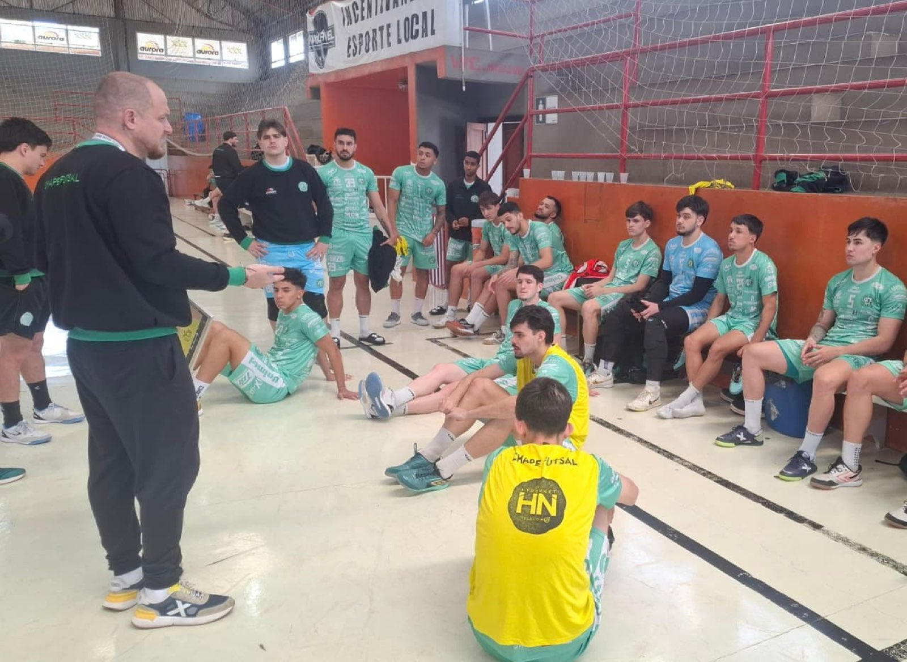

A Prefeitura de Chapecó/Chapecoense/Unochapecó inicia nesta terça-feira (20) a disputa por uma vaga à semifinal da Série Ouro da Federação Catarinense de Futsal. O Verdão das Quadras recebe o São Lourenço, às 19h30, no Ginásio Plínio Arlindo De Nes (SER Aurora), em Chapecó, pelo primeiro confronto das quartas de final da competição.
A partida reedita um dos cruzamentos da mesma fase do Catarinense de 2025. Na ocasião, a Chape Futsal eliminou o adversário regional nos pênaltis, diante da torcida, e avançou à semifinal, quando acabou superada pelo Joinville. Desta vez, o segundo e decisivo confronto será em São Lourenço do Oeste devido à campanha na primeira etapa do campeonato.
O Verdão das Quadras chega ao mata-mata depois de uma semana importante de preparação. O pivô Trentin destacou o período de treinamentos e a necessidade de conquistar um resultado positivo no primeiro jogo.
“A preparação está muito boa. A gente teve uma semana importante de treinamentos, que fazia tempo que a gente já não tinha mais. E acredito que isso vai ajudar muito nessa primeira partida do mata-mata. A gente sabe da importância dessa partida em casa, de sair com uma vitória para buscar a classificação lá”, afirmou.

O jogador também reforçou o convite para que a torcida compareça ao ginásio e apoie a equipe. “Então a gente, mais uma vez, conta com o apoio de toda a torcida, que vem aqui e empurra o nosso time”, completou. O duelo da volta será na quarta-feira da próxima semana, dia 28 de outubro, às 19h30, na arena de São Lourenço do Oeste.
Se cada equipe vencer uma partida ou os dois jogos terminarem empatados, a classificação será decidida na prorrogação. Havendo igualdade no tempo extra, a vaga à semifinal será definida nos pênaltis.
Ingressos
Os bilhetes para o confronto desta terça estão à venda por R$ 25 (inteira, 1º lote), R$ 30 (inteira, 2º lote) e R$ 15 (meia-entrada). Os sócios-torcedores da Chape Futsal têm acesso garantido mediante apresentação da carteirinha. Crianças de até 12 anos não pagam ingresso, desde que estejam acompanhadas por um responsável e apresentem documento de identificação.
As entradas podem ser adquiridas pelos sites chapecoensefutsal.com.br e ingressojogo.com.br, além da Loja Oficial Chape Futsal, anexa à Classic Uniformes, e da Loja iXap Sports. Também haverá venda na bilheteria do ginásio no dia da partida.
Fotos: Chape Futsal